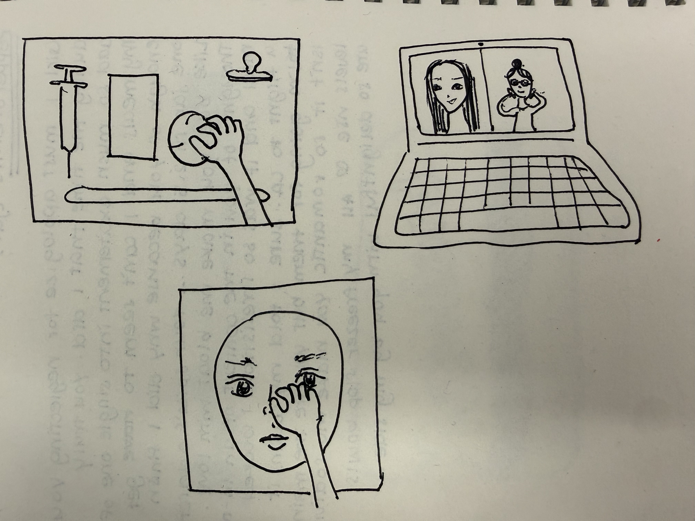
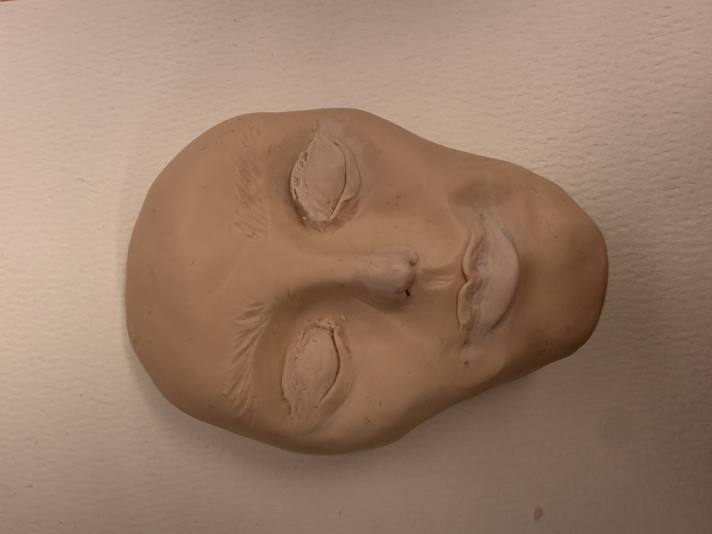

For this assignment, I decided to focus on Hypic, or 醒图 in Chinese, but it applies to other beauty enhancing apps as well. These applications’ facial editing tools work almost entirely through abstracted, indirect controls; sliders to change the size of your face, eyes, nose, etc. A few different things make up this experience:
Affordances: precision (numeric/percentage control), speed, ability to undo, and preset filters for users who don’t want to change in detail themselves.
Limitations: the mapping between gesture and result is arbitrary, as dragging a slider left has no felt relationship to, let’s say, a smaller nose. There is no resistance, no material logic, and there is so much ease.
Experiential quality: fast, somewhat dissociative, almost clinical. These apps facilitate small “corrections” rather than one considered gesture, which is part of why the results sometimes feel uncanny as it is a culmination of small edits.
The absence of materiality and gesture makes up this concept; editing a photo currently feels like adjusting some settings and not like touching a face. I want to reintroduce resistance and effort, as well as a different relationship to “correction.”

The first sketch consists of a manipulation board, where different components represent different features you’re editing from your face. For example, the pulling of a syringe represents how much your lips get enlarged, or the more you squish a ball, the smaller your face gets. The second sketch is a digital app where on one side you have the picture you’re editing, and the other tracks your body movements; you have to physically pinch your nose to shrink it, or physically do a molding movement on your jaw to shrink it. The last sketch is a pad with a face on it, where you manually have to pinch and alter the model to change the features in the image.
For the prototype, I decided to go with the last sketch. I built a clay face that “connects” to your phone, and you physically manipulate the shape in order to edit the features. I felt like by going through with this, I am able to build a different relationship to “correction” — pinching, pulling, and pressing clay requires force and yields proportional deformation, unlike a digital slider. The use of this tool reframes the emotional register of the tool entirely.
Reflecting on the assignment, what became possible was the continuous non-discrete adjustment of features, so you can literally shape and mold features. However, to undo you would have to re-shape the clay, which almost even plays into the concept more as you can never really restore the purest form of the image. Through this form of enhancing your pictures, there is resistance from the physical clay.
Although my prototype wasn’t functional, Brian played around with the clay model, and we talked about how the more you play with it, the more it gets deformed, which also kind of makes me reflect about the actual impact of the apps. There is a certain point where you stare at enhanced features so much that you start losing a bit of touch with the real, raw version of your facial features. The fact that the clay retains the marks of manipulation overrides the apps’ sliders that cleanly reset to zero, and the physical face just keeps getting progressively deformed. After editing a photo, you’re left with a weirder physical record of all the modifications you made.

I like that the clay is intuitive, but I wonder if a future version could use silicone or soft rubber that does allow the face to return to its original shape, which would allow for the tool to be more realistically functional. Since this was a prototype, a developed version would need sensors, embedded pressure, and more things, in addition to actual designated gestures for changing more advanced features. Although the more obvious ones are straightforward pinching and pulling, I wonder what something such as skin smoothing or pimple erasing would look like. Additionally, digital beauty apps are detailed and allow tiny adjustments, but clay is a lot less precise, so one needs to decide whether precision is even desirable or whether the imprecision is part of the product.